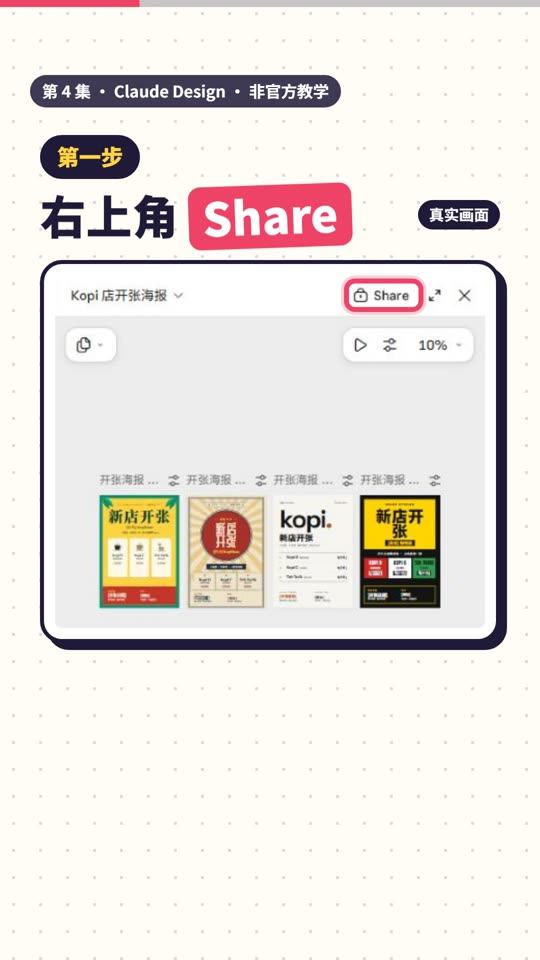
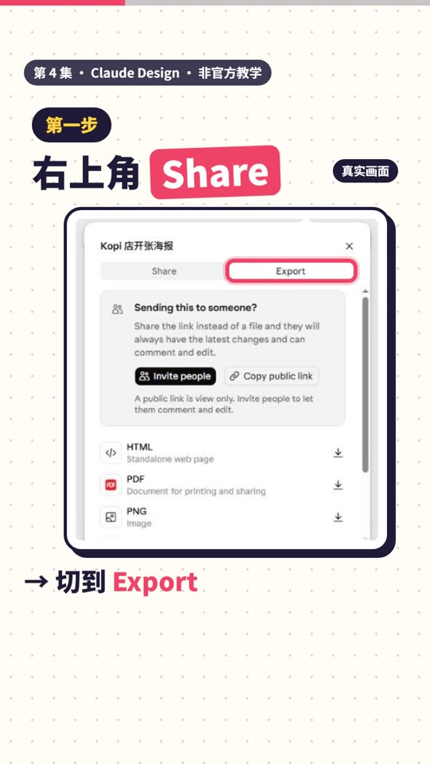
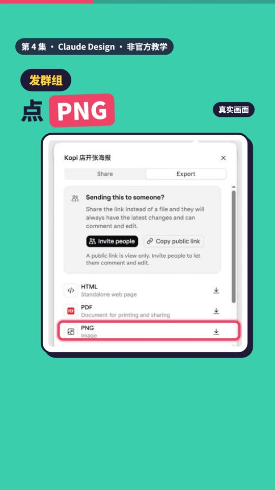
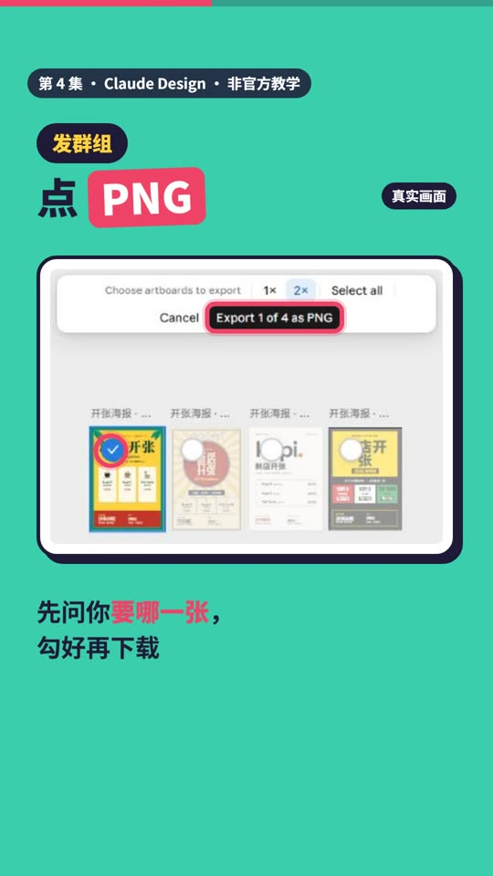
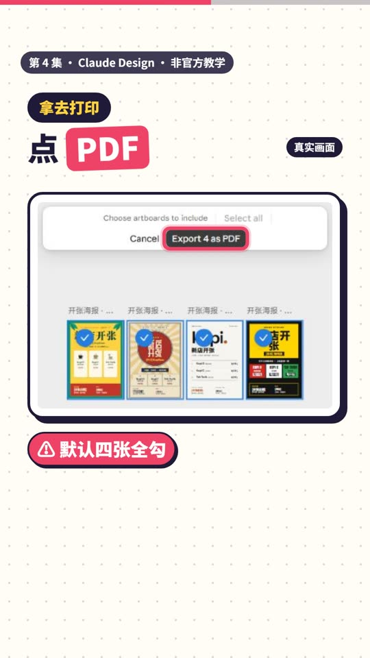
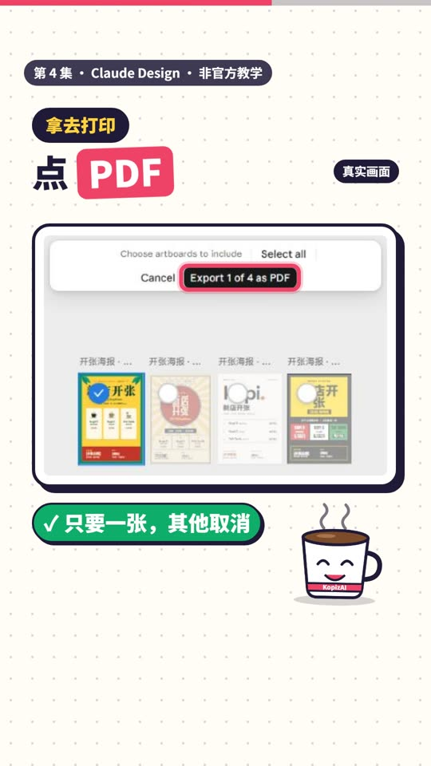
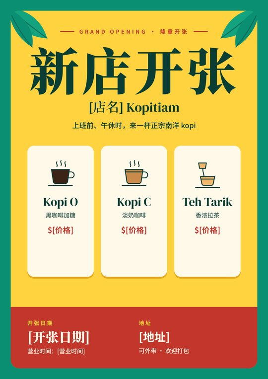
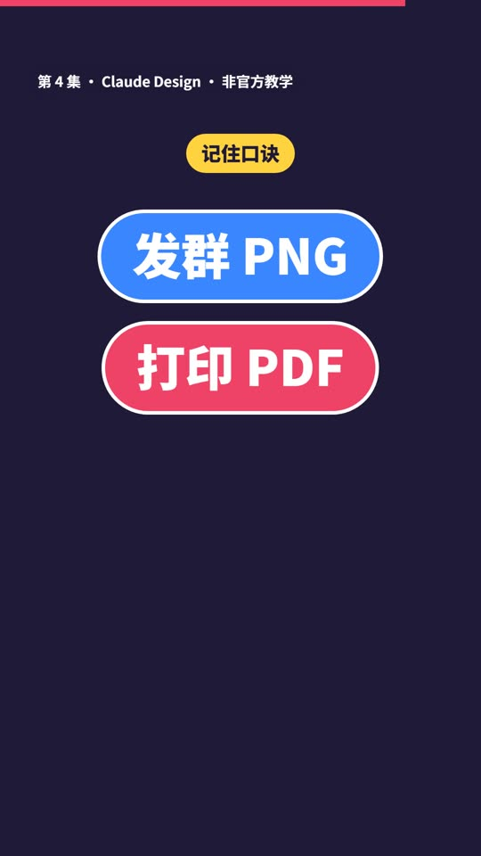

第 4 集 · 做好的海报怎么导出
一句话： 右上角 Share → Export。发群用 PNG，打印用 PDF，导出前先勾对要哪一张。
对照官方文档和真实界面核对日期：2026-11-12 ｜ 时长 37 秒 ｜ 非官方教学
跟着做
第一步：右上角 Share，切到 Export（视频 00:08）
在设计画布的右上角点 Share，弹出的面板里切到 Export 分页。（设计标题旁的小箭头菜单里也有 Export，打开的是同一个面板。）


第二步：发群组，点 PNG（视频 00:11）
点 PNG 右边的下载箭头。画布上方会出现 "Choose artboards to export"：点海报左上角的圆圈，勾上你要的那一张（默认只勾第一张），再点 Export 1 of 4 as PNG。
旁边的 1× / 2× 是清晰度，默认 2×。我们导出的那张是 1800×2544 像素，发 WhatsApp 很够用。


第三步：拿去打印，点 PDF（视频 00:17）
点 PDF 右边的下载箭头。小心：PDF 默认把画布上的每一张都勾上（我们画布上有四张，按钮写着 Export 4 as PDF）。只要一张，就把其他的圆圈点掉，按钮变成 Export 1 of 4 as PDF 再点。
导出的 PDF 里，字是真的文字，打印出来字边清楚。


结果（视频 00:23）

口诀
发群用 PNG，打印用 PDF。

时间点
| 时间 | 内容 |
|---|---|
| 00:00 | 海报做好了，怎么拿出来用？ |
| 00:02 | 老板要发群，还要印一张 |
| 00:08 | 右上角 Share，切到 Export |
| 00:11 | 发群组：PNG，先勾要哪一张 |
| 00:17 | 打印：PDF，默认全勾，只留一张 |
| 00:23 | 导出的结果 |
| 00:28 | 口诀，下一集预告 |
顺便知道
- Export 面板里还有 HTML（单独的网页文件）、Claude Docs、Claude Slides，以及 More formats and apps（Canva、Miro、Gamma 等，要先连接你在那边的账号）。
- 官方说明里列的格式和我们看到的界面不完全一样：文档写了 .zip、PPTX、Google Slides，没写 PNG；界面第一层有 PNG。以你自己看到的为准。
- 要给同事看、让对方一直看到最新版，可以发链接，不用发文件：Export 面板最上面就有 "Sending this to someone?"。下一集讲。
来源：Claude 帮助中心《Get started with Claude Design》（Export and share 一节），以及 2026 年 11 月 claude.ai 的实际界面 https://support.claude.com/en/articles/14604416-get-started-with-claude-design